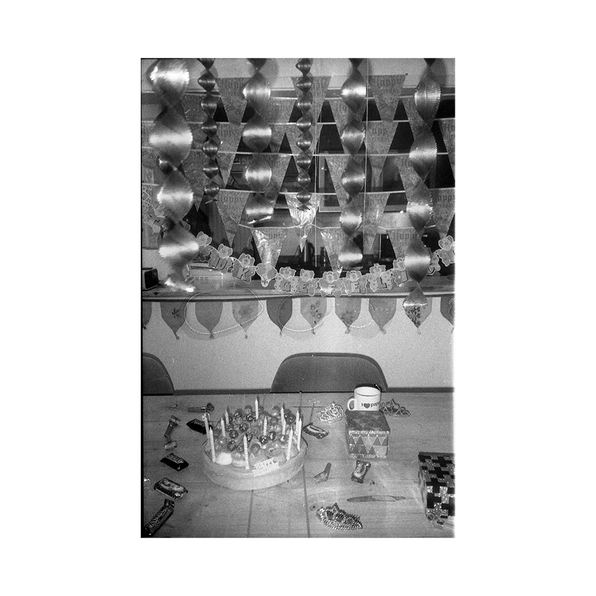
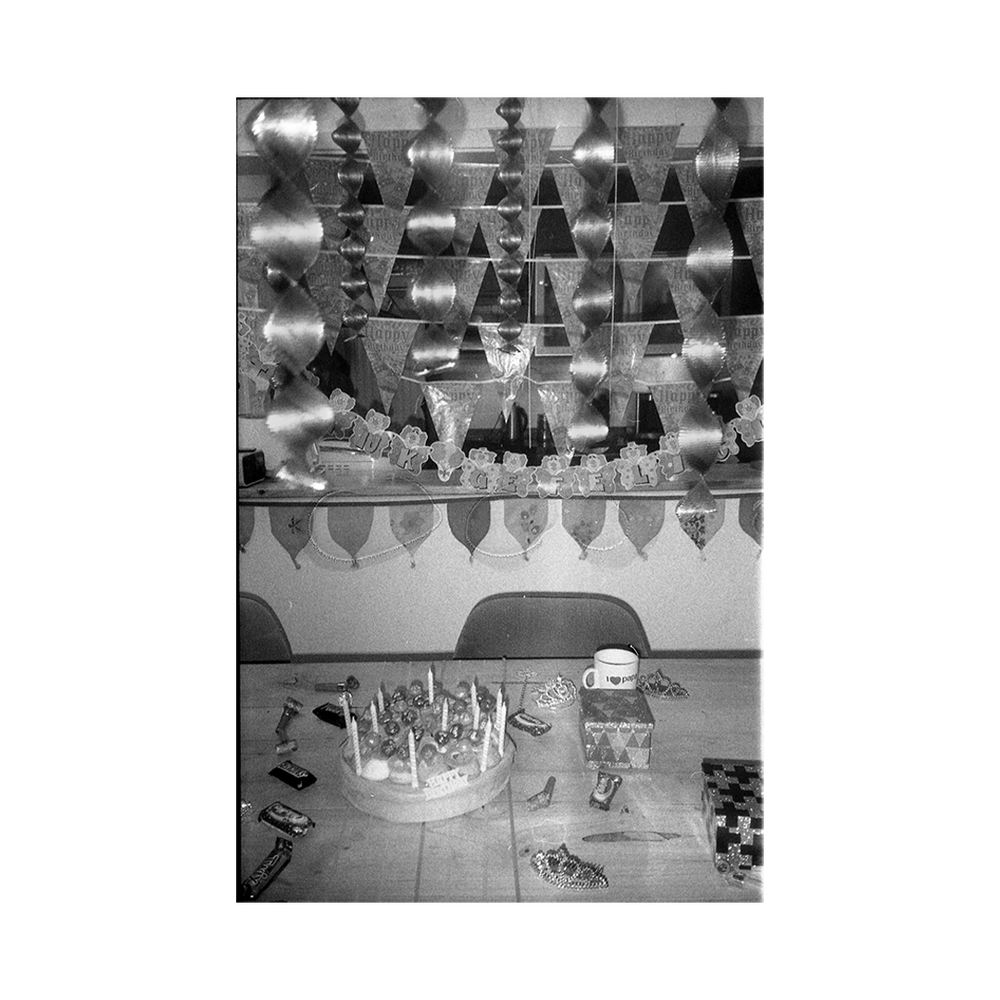
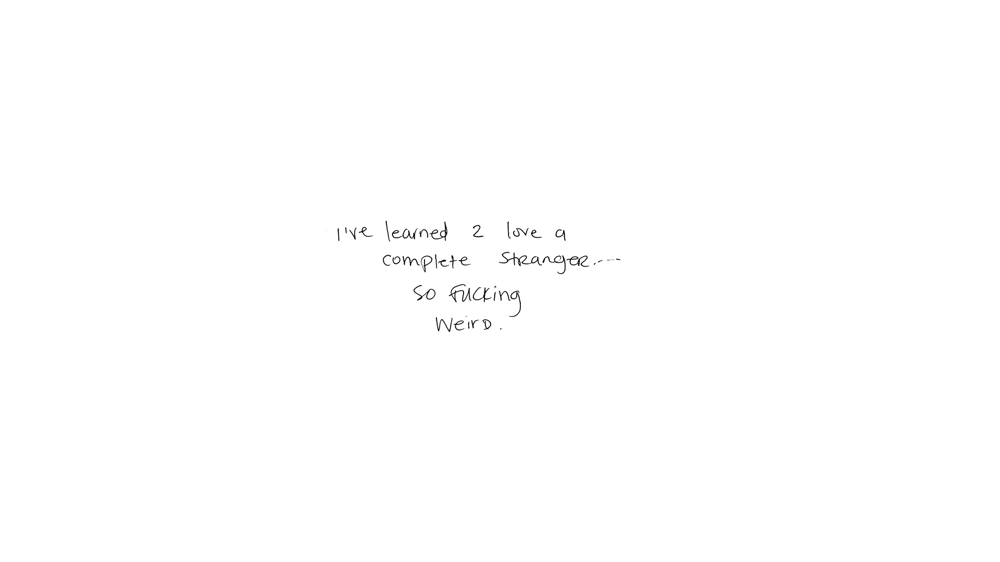
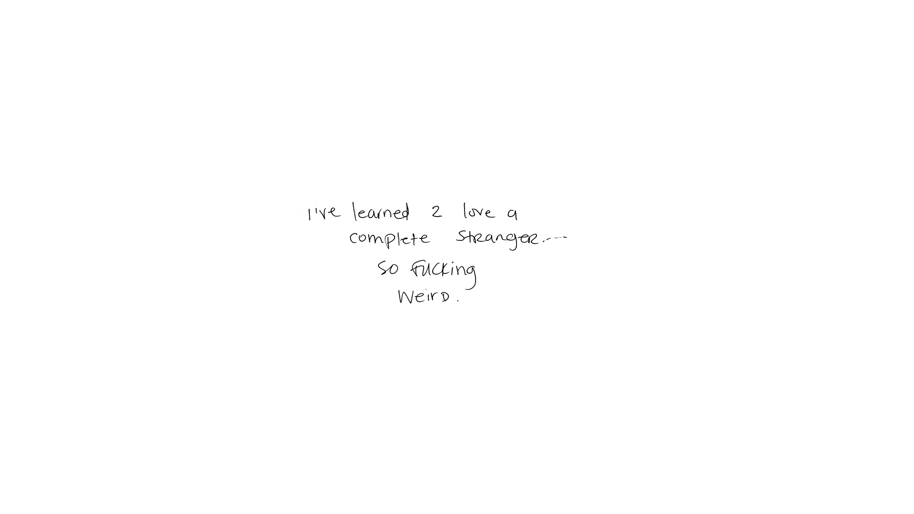
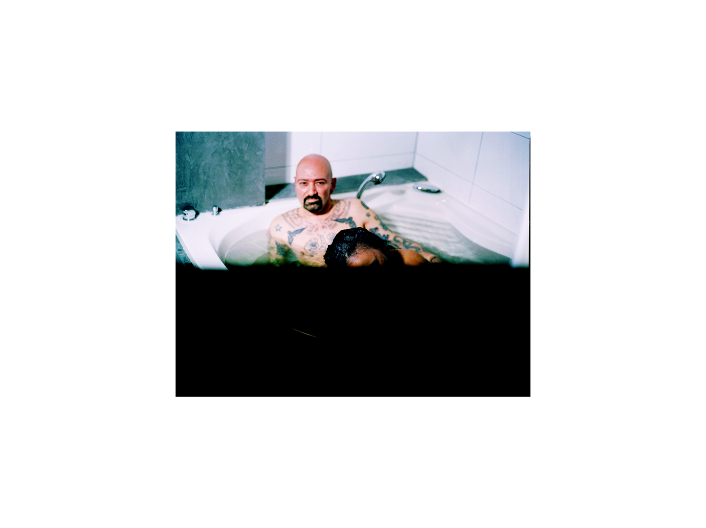
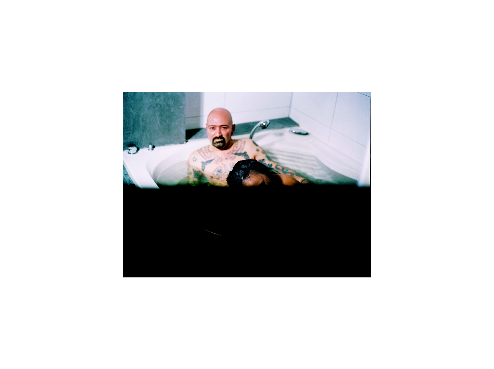
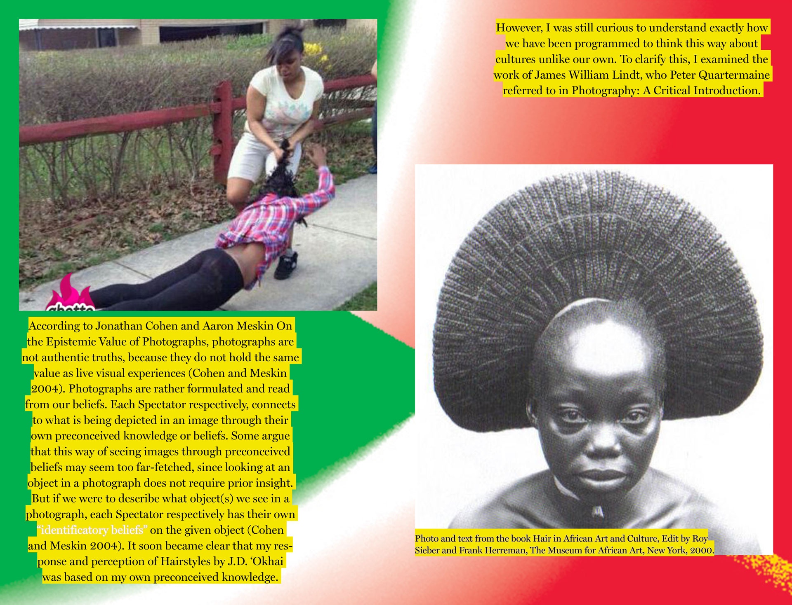
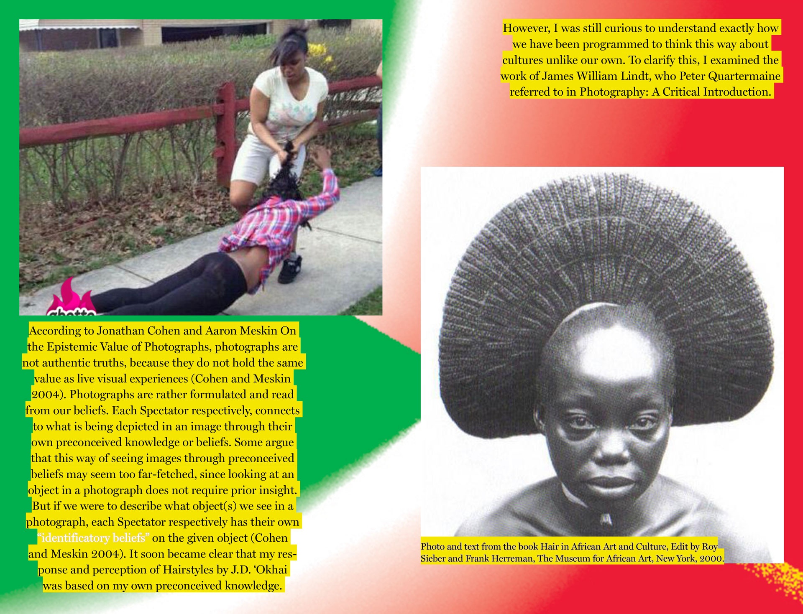
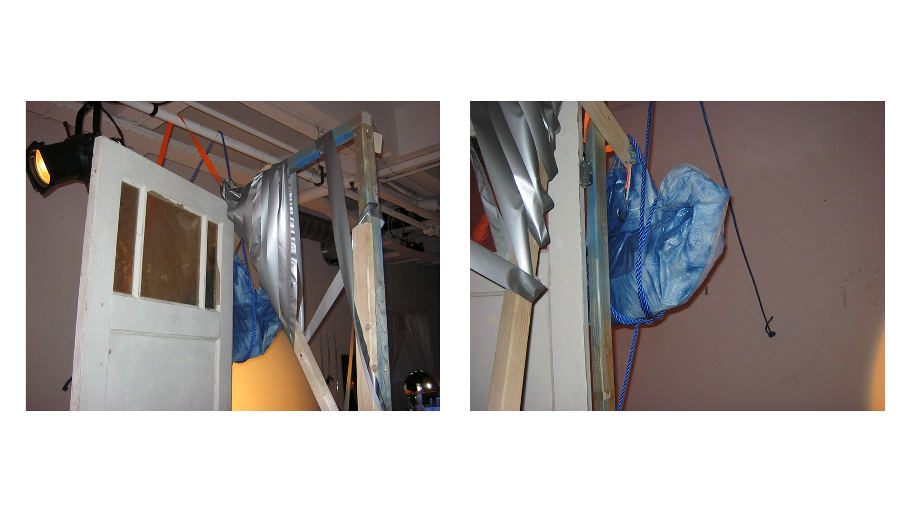
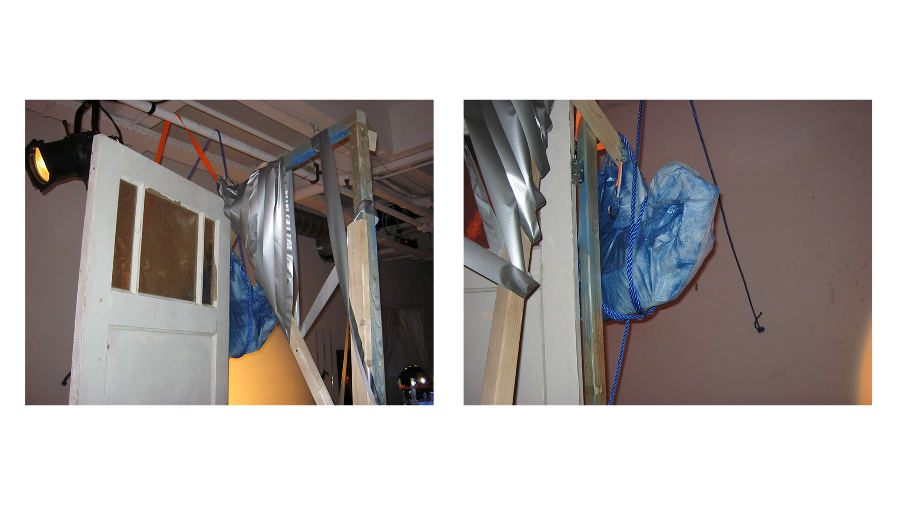

Visual Work
I Forgot How to Speak Spanish
film, photos, installation
2018
dir. Sydney Rahimtoola
dop. Frisly Soberanis
editor. Saffia Rahimtoola
photographs by Sydney Rahimtoola
installation by Sydney Rahimtoola
Junction Boulevard’s culture is largely based on locals and migrants coming from different Latin American countries. It is a place where several mothers run the dynamics, while men lay around with their Brugal bottles, listening to music from the island and playing dominos. Almost everyone talks fondly about “back in the day.”
I Forgot How to Speak Spanish is a visual narrative of my childhood hometown and household in Junction Boulevard, Queens, NY. Together with a cast and crew of family, friends, and locals, I revisit familiar family routines and spaces of my family’s Dominican-American heritage. The cast is reduced into a set of stereotyped versions of themselves, with the domestic space appropriated into a eerie, hyper visual, and cinematic journey of her identity and the anxieties that come along with it. The narrative is led by the voiceover of of La Babosa, a second generation Dominican American. Her perspective is informed through notions of what is home, where does she belong, childhood nostalgia and questions of how she experiences her identity as a Dominican American.
The film is paired together with a photographic collection of the film characters & an immersive hair installation.


Substitute Daddies
 


 


 

UNDO
2018-present
*ongoing publication
written, developed by: Sydney Rahimtoola
documentation by: Sydney Rahimtoola
design: Malik Saïb-Mezghiche
In UNDO, I identify the dilemmas present in the representation of black and brown people (POC) in photography. These dilemmas is a “primitive” visual language present in our imagination concerning POC, hindering our experience with reading visual content. “Primitive” identifiers in images have historically been used to harmfully categorize, thus marginalize black and brown people. I go in depth with how and why these “primitive” identifiers were birthed, and how it remains in our consciousness, using the colonial past as evidence. Most importantly, I reflect how black and brown artists use their creative agency to reclaim and re-narrate these identifiers.
The key elements to demonstrate these points is formulated with an in-depth analysis to J.D. ‘Okhai Ojeikere’s Hairstyles archive. Through this archive, I conclude how J.D. ‘Okhai uses photography to maintain agency and ownership to his country’s hair culture in Nigeria, and the urgency for us as an audience to hold ourselves accountable from identifying his content with primitive identifiers.
Keeping hair as the focus point, I continue to apply how black and brown artists today resist these stereotyped implications using image and black folklore as tools of reclamation. These tools deal with how POC signify and communicate using hair, and how this means resistance and necessity for the sake of their self expression and identity. It includes: Black Twitter, “ratchet” culture, memes, and black queer culture.
The design made by Malik Saïb-Mezghiche, took its shape as a series of colorful, gradient backgrounds matched with research texts co-existing alongside an visual archive from online of hair styles, memes, and video stills.

 



La Ciguapa
Metro54
“This is a Takeover: Researching Remix” Dutch Design Week (2019)
photos and installation funded by Stimuerlingsfonds
photos. Sydney Rahimtoola
photo mural design. Malik Saïb-Mezghiche
installation. Philip Astanova


Utopia Ball
*ongoing collaboration
photographs for Yamuna Forzani's collections and press material for The Utopia Ball in Den Haag.
featuring. Lukas Engelhardt, Malik Saïb-Mezghiche, Joel Quayson, Latisha Horstink

Programming
New Year New Me
NYNM is a 24 hour performance event series, co founded by Sydney Rahimtoola, Malou Bumbum and Giovanni Palmieri. It snowballs through the 24-hours, where external artists and collaborators are invited to create performances and installations that directly interact with the audience. We believe in socially engaging local communities in The Netherlands through an overnight program, where a temporary community is naturally created, through play, DIY, performance, and atmosphere.
NYNM, "It's Not A Phase Mom” (2018)
S/ASH Gallery, WORM, Rotterdam
photos. Sandra Patow
NYNM, “Real Love” (2019)
PIP, Den Haag
photos. Daniel Walton
NYNM 24 Hours Down the Gloryhole (2019)
UBIK, WORM, Rotterdam
photos. Salves van der Gronde
 
